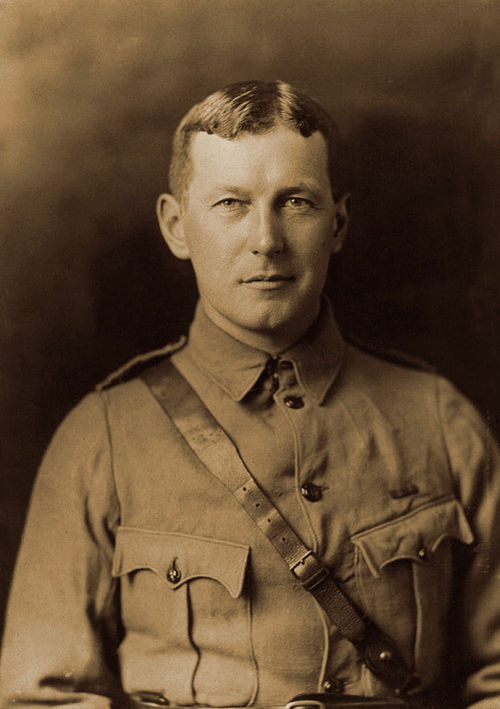
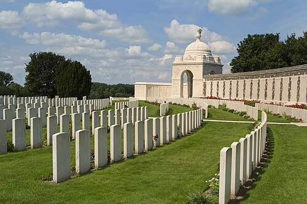
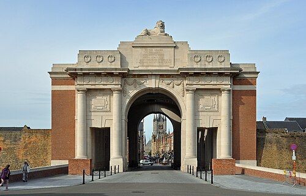
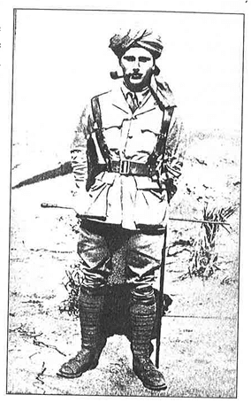
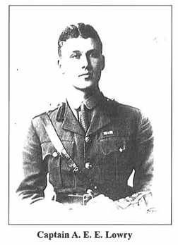
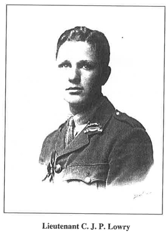

Enquiry: Thursday 1st October – Saturday 3rd October 2026
Contents
Lesson 1: Pre-Trip Information
Lesson 2: Day 1: Thursday 1st October 2026
Lesson 3: Day 2: Friday 2nd October 2026
Lesson 4: Day 3: Saturday 3rd October 2026
Lesson 5: Private T. J. Franklin
Lesson 6: Private W. Ayling
Lesson 7: Private S. Muckett
Lesson 8: Private A. Rye
Lesson 9: Lance Corporal A. Ward
Lesson 10: Private C. Warland
Lesson 11: The Final Teacher Challenge
Lesson 12: William Augustine 'Harper' Lowry
Lesson 13: Auriol 'Eric' Lowry
Lesson 14: Cyril John 'Patrick' Lowry
L1: Pre-Trip Information[[SRC_MARKER:L0_Start]]
Chronological Domino Flowchart
Task: The historical events below are out of order. Read them carefully, then use your pen to draw arrows connecting the boxes in the correct chronological and causal order (Event A ➔ Event B ➔ Event C...).
10th Sep Parent Briefing Meeting 16:15 in the School Hall. Attendance is highly recommended to receive final itineraries and ask any questions. I will be requesting passports in and EHIC cards. If you can't make it, you can hand it into the office before that date or just after.
1. Pre-Trip Briefing
Active Tasks
Q1.
L2: Day 1: Thursday 1st October 2026[[SRC_MARKER:L1_Start]]
Chronological Domino Flowchart
Task: The historical events below are out of order. Read them carefully, then use your pen to draw arrows connecting the boxes in the correct chronological and causal order (Event A ➔ Event B ➔ Event C...).
13:00 Depart Calais Coach journey to the Ypres Salient.
17:45 Arrival at Peace Village Accommodation check-in and safety briefing. View hostel details.
15:15 Langemarck German Military Cemetery Guided visit exploring the contrasting design of German burial sites.
19:15 Study & Reflection Session Guided review and workbook completion.
22:00 Curfew & Room Checks All students in rooms for the night.
11:20 Eurotunnel Crossing Transit to Calais (clocks go forward 1 hour).
18:15 Evening Meal Dinner followed by room allocation and settling in.
20:15 Supervised Free Time Downtime in communal areas.
14:30 Essex Farm Cemetery & Dressing Station Historical introduction to wartime medical care and Commonwealth war graves.
09:00 Folkestone Eurotunnel Terminal Check-in and security boarding.
06:15 Departure from School Travel via Jet Connect executive coach to Folkestone.
16:00 Hooge Crater Museum & Trenches Museum visit focusing on First World War artefacts, preserved trenches, and field medicine. Visit official website.
1. Day 1 Itinerary
The Ypres Salient was a bulge in the Allied frontline that surrounded the Belgian town of Ypres. Because it was a salient, British and Commonwealth troops were surrounded by German artillery on three sides, making it one of the most dangerous places on earth. Ypres was the last major Belgian town not to fall to the Germans, making it a powerful symbol of resistance.
Key Facts:
Over half a million soldiers died defending a strip of land barely ten miles wide.
The Salient consisted of thick, heavy clay that, when bombarded by artillery, turned into a deadly, bottomless mud.
Five major battles were fought here between 1914 and 1918.
Written Source: "I am no longer an artist interested and curious, I am a messenger who will bring back word from the men who are fighting to those who want the war to go on for ever. It is unspeakable, godless, hopeless." — Paul Nash, British War Artist (1917)

Lt Col John McCrae, author of In Flanders Fields
Essex Farm served as an Advanced Dressing Station (ADS). Medical officers worked in cramped, concrete dugouts just hundreds of yards from the fighting to stabilize the wounded before they could be evacuated to hospitals further back.
Key Facts:
Triage was practiced here: sorting casualties based on the severity of their wounds.
In May 1915, Canadian surgeon Lt Col John McCrae wrote the famous poem In Flanders Fields while stationed here after burying his friend Alexis Helmer.
Valentine Joe Strudwick, one of the youngest casualties of the war at just 15 years old, is buried here.
Written Source: "In Flanders fields the poppies blow Between the crosses, row on row, That mark our place; and in the sky The larks, still bravely singing, fly Scarce heard amid the guns below.
We are the Dead. Short days ago We lived, felt dawn, saw sunset glow, Loved and were loved, and now we lie In Flanders fields.
Take up our quarrel with the foe: To you from failing hands we throw The torch; be yours to hold it high. If ye break faith with us who die We shall not sleep, though poppies grow In Flanders fields." — Lieutenant-Colonel John McCrae, Canadian Army Medical Corps, composed at Essex Farm (May 1915).
Unlike the bright, white Portland stone of British cemeteries, German cemeteries like Langemarck are intentionally somber, shaded by large oak trees and featuring dark stone blocks, reflecting Germanic mourning traditions.
The Langemarck Student Myth: The Heroic Propaganda: The German High Command claimed that thousands of young, patriotic student volunteers advanced fearlessly on enemy lines singing 'Deutschland über alles'. They were portrayed as the ultimate heroes who joyfully gave their lives for the Fatherland.
The Tragic Reality: These volunteers were woefully untrained and poorly equipped. Instead of a glorious charge, they were marched blindly into devastating British machine-gun fire. Thousands were slaughtered needlessly in what became known as the 'Massacre of the Innocents of Ypres'.
Task: The Individuals
Look at the names on the bronze oak panels. Remember that every German soldier in the mass grave had a story and family back home.
The Nazi regime weaponized the 'Langemarck Myth' to bridge the humiliation of 1918 with the militarism of the Third Reich, transforming a World War I military failure into a cult of youth sacrifice. Hitler exploited the site to legitimize his own regime, presenting himself as the fulfillment of the students' uncompleted mission.
Primary Source: The Official 1914 Fabrication The entire Langemarck myth originates from a single, highly manipulated press release. On November 11, 1914, the German Supreme Army Command (Oberste Heeresleitung or OHL) needed to distract the German public from a devastating tactical failure and a massive loss of life. They issued an official communiqué that intentionally fabricated a romanticized narrative of youthful, willing sacrifice:
"We made good progress yesterday in the Yser section. West of Langemarck young regiments broke forward with the song 'Deutschland, Deutschland über alles' against the front line of enemy positions and took them." — Official Communiqué of the German Supreme Army Command (OHL), 11 November 1914
Primary Source: Adolf Hitler’s Weaponization A decade later, Adolf Hitler hijacked this fabricated story to lay the psychological groundwork for the next war. In his 1925 manifesto, Hitler inserted himself directly into the Langemarck narrative, twisting a military disaster into a mystical, almost religious awakening of the German soul. He used this specific battle to groom the Hitler Youth, demanding they view the slaughtered students as the ultimate role models for blind obedience to the Fatherland:
"And then the night came down, and we advanced in silence, and as daylight broke, the first greeting of the morning whistled over our heads... Then from afar the strains of a song reached our ears, coming closer and closer... And as Death plunged his hand into our ranks, the song reached us too, and we passed it on: Deutschland, Deutschland über alles!" — Adolf Hitler, Mein Kampf, Volume 1, Chapter 5: The World War, 1925
Historical Interpretation: Dismantling the Myth Modern historians have thoroughly dismantled the Kindermord (Massacre of the Innocents) narrative. In his landmark study on how nations process the trauma of war, historian George Mosse details how the disaster at Langemarck was deliberately repackaged by right-wing extremists. Mosse argues that the Nazi Party actively weaponized the grief surrounding the Langemarck cemetery to create a "cult of fallen soldiers," replacing the horrific reality of industrialized slaughter with a sanitized, glorious myth of youth and manliness to justify future aggression. — Professor George L. Mosse, Fallen Soldiers: Reshaping the Memory of the World Wars, Oxford University Press, 1990
By understanding the myth, students can look at the bronze oak panels and recognize how the memories of those individuals were stolen and repurposed for a second, even more devastating war.
Hooge was the site of intense, close-quarters fighting. The opposing trenches were so close that soldiers could hear each other speaking. In July 1915, the British detonated a massive underground mine beneath the German lines, creating a massive crater.
Key Facts:
The mine blast created a crater 120 feet wide and 20 feet deep.
Soldiers in these trenches suffered terribly from 'trench foot' due to standing in freezing mud and water for days on end.
Written Source: "The trench was a ribbon of earth, filled with freezing water, the stench of unburied bodies, and the constant, nerve-shredding crack of sniper fire." — Private Frank Richards, Royal Welch Fusiliers
Active Tasks
Q1.
Source AA photograph taken by official war photographer Frank Hurley showing Australian soldiers walking along a duckboard track through the shattered landscape of Chateau Wood during the Battle of Passchendaele, 1917.
Source BAn aerial photograph showing clouds of poison gas rolling across the battlefield during a chemical attack on the Western Front.
Provenance Scaffolding:
Source A was taken by an official photographer known for dramatic compositions; does this limit its usefulness or perfectly capture the reality of the mud? Source B is an aerial photograph of a gas attack; what makes this detached, wide-angle view of the battlefield useful for understanding the scale of chemical warfare?
Q2. 1 (a). How useful are Sources A and B for an enquiry into the difficult conditions faced by the medical services at Passchendaele and Ypres? Explain your answer, using Sources A and B and your knowledge of the historical context. (8 marks)
L3: Day 2: Friday 2nd October 2026[[SRC_MARKER:L2_Start]]
Chronological Domino Flowchart
Task: The historical events below are out of order. Read them carefully, then use your pen to draw arrows connecting the boxes in the correct chronological and causal order (Event A ➔ Event B ➔ Event C...).
20:30 Return to Accommodation Supervised free time.
08:00 Breakfast Provided at accommodation.
11:30 Supervised Lunch Stop Stop in Ypres to purchase packed lunch and snacks.
09:15 The Brooding Soldier Visit to the Canadian memorial at St Julien (First Gas Attack, 1915).
15:45 Passchendaele Museum (Zonnebeke) Immersive museum tour and dugout experience. Visit official website.
14:15 Lijssenthoek Visitors Centre & Cemetery Study of casualty clearing stations and battlefield medicine. Visit official website.
18:00 Evening Meal Dinner at accommodation.
19:00 Menin Gate, Ypres Attend the historic 20:00 Last Post Ceremony, including official wreath laying by nominated students. Last Post Association.
13:00 Tyne Cot British Cemetery Guided visit to the world's largest Commonwealth war cemetery.
17:30 Return to Peace Village Downtime and preparation for evening event.
22:00 Curfew & Room Checks All students in rooms for the night.
09:00 Depart for Battlefield Sites Board coach for full day of guided study.
09:45 Sanctuary Wood & Preserved Trenches Exploration of original trench systems (sturdy footwear advised).
1. Day 2 Itinerary
In April 1915, the Germans launched the first major poison gas attack of the war on the Western Front at St Julien. A heavy cloud of chlorine gas was released, devastating the French colonial troops and forcing the Canadian 1st Division to step in and hold the line.
Task: The Direction of the Gas
Action: Open your phone's compass app. Stand at the base of the Canadian memorial and turn until you are facing the exact direction the German gas attack came from (North-East).
\"Gas! GAS! Quick, boys!—An ecstasy of fumbling...\" - Wilfred Owen
Learn these 3 facts by heart before getting back on the coach:
Chlorine gas severely damaged the respiratory system, causing victims to suffocate.
The earliest defense was holding cotton pads soaked in urine over the mouth (ammonia neutralized chlorine).
The memorial shows a soldier in a 'reverse arms' position, signifying mourning, not victory.
Sanctuary Wood was initially a quiet area behind the lines where soldiers could rest (a sanctuary), but it eventually became part of the frontline. Today, it offers a rare look at an original, preserved trench system.
Key Facts:
Trenches here were reinforced with corrugated metal ('elephant iron') to prevent collapse in the waterlogged soil.
The shattered, dead trees preserved in the wood are a direct result of relentless artillery fire tearing the landscape apart.
Local Connection: Just a short distance from here is Westhoek Ridge, where Stubbington local Auriol 'Eric' Lowry fought in 1917.
Written Source: "I died in hell—(They called it Passchendaele). My wound was slight, / And I was hobbling back; and then a shell / Burst slick upon the duck-boards: so I fell / Into the bottomless mud, and lost the light." — Siegfried Sassoon, Memorial Tablet
Task: The Senses of the Salient
As you walk through the preserved trench system, close your eyes for 30 seconds. Imagine the sound of artillery, the smell of mud and cordite, and the fear of a night raid. Think of three adjectives that describe how it feels to stand here.
The Ypres Salient was a massive bulge in the Allied front line, leaving British and Commonwealth troops dangerously exposed to German artillery fire from three sides.
It was the site of three major, apocalyptic battles (1914, 1915, 1917), resulting in over 300,000 British and Commonwealth casualties.
During the Second Battle of Ypres in 1915, the Salient witnessed the first mass use of poison gas on the Western Front.
The high water table and relentless artillery bombardment destroyed natural drainage, turning the Salient into a notoriously lethal landscape of liquid mud.
Sanctuary Wood earned its name in 1914 as a quiet rear area where troops rested, but by 1916, the front line had violently collapsed back into the woods.

Tyne Cot Cemetery
Tyne Cot is the largest Commonwealth war cemetery in the world, reflecting the incomprehensible scale of the casualties during the Battle of Passchendaele (1917).
Task: Tell Their Story
Find the grave or panel of one of our Local Heroes (e.g., Lance Corporal A. Ward). At the end of the visit, you will be asked to orally tell the rest of your group about this soldier.
Lijssenthoek was the largest evacuation hospital in the Ypres Salient. Located just out of artillery range, it received casualties directly from the frontline dressing stations.
Key Facts:
It handled over 200,000 casualties during the war.
The cemetery graves provide a timeline of hospital mortality, showing spikes during major offensives.
Advances in treating infection happened here, including the Carrel-Dakin method of flushing wounds with antiseptics.
Nurses also lost their lives here, such as Staff Nurse Nellie Spindler who was killed by a shell.
Task: The Medical Frontline
Walk along the rows of headstones and find the grave of Staff Nurse Nellie Spindler (the only female casualty buried here). Consider: Why were medical staff, located miles behind the front line, still at risk of death?
Staff Nurse Nellie Spindler was a 26-year-old nurse serving with the Queen Alexandra’s Imperial Military Nursing Service. In August 1917, at the height of the Battle of Passchendaele, the casualty clearing station where she worked was struck by German artillery. Shrapnel tore through her tent, killing her instantly. Today, she is the only woman buried alongside more than 10,000 men at Lijssenthoek Military Cemetery, serving as a powerful physical reminder that women operating in medical roles lived and died in the direct line of fire.
The First Aid Nursing Yeomanry (FANY) was created in 1907 as an all-female voluntary organization.
FANYs drove motor ambulances through heavily shelled, muddy roads to evacuate bleeding soldiers from the front.
They operated soup kitchens, mobile canteens, and advanced dressing stations, consistently working under direct enemy bombardment.

The Menin Gate, Ypres
The Menin Gate is a colossal memorial to the missing in Ypres. Millions of Allied soldiers marched through this spot on their way to the frontlines, and many never returned.
Task: Local Hero & The Empire
Find the Local Hero
Private T. J. Franklin
Regiment: 1st Battalion, The Hampshire Regiment Local Connection: Stubbington Fate: Killed 29th April 1915 holding an exposed line on the Frezenberg Ridge.
Action: The Menin Gate has 54,000 names. Locate the specific panel for Private T. J. Franklin.
The Indian Forces Memorial
Once you have found his name, walk out of the gate and up onto the grassy ramparts. Locate the Indian Forces Memorial. 130,000 troops from the Indian subcontinent served in Flanders. Take a moment to read the inscription before the Last Post begins at 8:00 PM.
The Empire's War: Global Voices in Flanders
David Olusoga’s WW1 Uncut series brilliantly dismantles the traditional, whitewashed image of the trenches, making it the perfect digital companion for this stop.
Action: Watch the embedded David Olusoga video on your device, then stand before the Indian Forces Memorial and complete these three steps:
Observe the Symbolism: Look closely at the monument's base and the four Asian lions facing outward (the State Emblem of India). This memorial was unveiled in 2011. Why do you think it took nearly a century for a dedicated national monument to be placed here, and what does this delay tell us about how history is remembered?
Challenge the Image: Olusoga explains that the Western Front was one of the most diverse spaces on earth. Look down at the Menin Gate, where 413 Indian soldiers with no known grave are carved into the stone alongside British troops. How does standing here change the traditional textbook image of the "British Tommy" in the mud?
Discuss the Impact: Indian Expeditionary Force A arrived in freezing conditions in late 1914, plugging critical gaps in the British line just in time to prevent a German breakthrough. Discuss with your partner: How might the First Battle of Ypres have ended if those 45,000 Empire troops had not been deployed?
Watch (6 mins 31 secs): Historian David Olusoga reveals the true diversity of the World War One trenches. Pay attention to the sheer number of nations that fought and died in the exact mud you are standing on today. Contrast this with the Chattri Memorial on the South Downs in Sussex, where wounded Indian soldiers were cremated after being treated at the Royal Pavilion in Brighton.
Active Tasks
Q1.
Source AA photograph showing the devastating impact of artillery fire and mud on the landscape during the Battle of Passchendaele, 1917.
Source BA photograph of soldiers from the Cheshire Regiment occupying a captured German trench, 1916.
Provenance Scaffolding:
Source A is an official photograph documenting the severe mud and destroyed landscape; what can it tell us about the conditions soldiers had to fight in? Source B shows men resting in a captured trench; what does this reveal about the realities of trench occupation?
Q2. 1 (a). How useful are Sources A and B for an enquiry into the physical conditions of the landscape and trench warfare on the Western Front? Explain your answer, using Sources A and B and your knowledge of the historical context. (8 marks)
L4: Day 3: Saturday 3rd October 2026[[SRC_MARKER:L3_Start]]
Chronological Domino Flowchart
Task: The historical events below are out of order. Read them carefully, then use your pen to draw arrows connecting the boxes in the correct chronological and causal order (Event A ➔ Event B ➔ Event C...).
08:00 Breakfast & Packing Breakfast, room handover, and loading coach.
13:30 Poperinge Town Hall Visit to preserved death cells and military justice sites.
14:30 Depart for Calais Return journey to Eurotunnel terminal.
11:20 Talbot House, Poperinge Tour of the famous British soldiers' rest house and club. Visit official website.
17:50 Eurotunnel Crossing Calais to Folkestone (arrives 17:30 UK time).
09:15 Menin Gate & Ramparts Walk Daytime study of memorial panels and walk to Ypres Ramparts Cemetery.
10:30 Ypres Town Square Supervised visit to a traditional Belgian chocolatier.
12:45 Lunch in Poperinge Supervised lunch stop in the town centre.
20:00 approx. Return to School Arrival back at Meoncross School for collection.
1. Day 3 Itinerary
St Martin's Church and Cloth Hall in Ypres, Belgium—after World War I
The medieval ramparts of Ypres provided some of the only cover in the destroyed city. Soldiers dug deep into the ancient moated defenses to hide from the shelling. The Ramparts Cemetery is one of the most picturesque on the Western Front, built directly into the town's defenses.
Written Source: "Who will remember, passing through this Gate, the unheroic dead who fed the guns? Who shall absolve the foulness of their fate,- Those doomed, conscripted, unvictorious ones?
Crudely renewed, the Salient holds its own. Paid are its dim defenders by this pomp; Paid, with a pile of peace-complacent stone, The armies who endured that sullen swamp.
Here was the world’s worst wound. And here with pride ‘Their name liveth for ever’, the Gateway claims. Was ever an immolation so belied as these intolerably nameless names? Well might the Dead who struggled in the slime Rise and deride this sepulchre of crime." — Siegfried Sassoon, On Passing the New Menin Gate
Task: Ancient Defenses
Look at the thick brick walls of the Ramparts. Why do you think soldiers chose to dig their dugouts into medieval defenses rather than staying in the open town? How does the Ramparts Cemetery differ in atmosphere from Tyne Cot?
The Ramparts were originally medieval fortifications, massively expanded and reinforced in the 17th century by the famous French military engineer Vauban.
Because the brick and earth walls were incredibly thick, they survived the relentless German artillery barrages that completely leveled the rest of the town.
British troops honeycombed these ancient walls, digging extensive subterranean dugouts to house battalion headquarters, dormitories, and advanced dressing stations safely out of the blast zones.
Located in the town of Poperinge, safely behind the lines, Talbot House was set up by Army Chaplain Tubby Clayton as an 'Every Man's Club'. It was an oasis of sanity where soldiers could escape the psychological horror of the trenches.
Key Facts:
Rank was completely ignored here; signs read 'Abandon Rank All Ye Who Enter Here'.
Soldiers could drink tea, write letters, use the library, and attend services in the attic chapel.
Over half a million men passed through its doors.
Task: Abandon Rank
Find the famous sign that reads 'Abandon Rank All Ye Who Enter Here'. Why was it so important for soldiers suffering from the psychological toll of the trenches to have a place where officers and privates were treated as equals?
For soldiers rotating out of the slaughter of the Salient, Talbot House was an essential psychological sanctuary. The mental toll of industrialized warfare—then poorly understood and heavily stigmatized as "shell shock"—destroyed thousands of men. By enforcing the rule "Abandon Rank All Ye Who Enter Here," Tubby Clayton removed the strict, oppressive military hierarchy that dominated soldiers' lives. This allowed them to decompress, play piano, and speak freely as human beings rather than cogs in a military machine. Today, this deeply resonates with modern understandings of PTSD, recognizing that mental survival in the armed forces requires psychological decompression, peer support, and the destigmatization of trauma.
A stark contrast to Talbot House, the nearby Poperinge Town Hall contains the death cells and an execution post used by the British Army. Discipline was incredibly harsh, and shell shock was poorly understood by the high command.
Key Facts:
Over 300 British and Commonwealth soldiers were executed by firing squad during the war, often for 'cowardice' or 'desertion'.
Many of these men were actually suffering from severe psychological trauma (shell shock) caused by the relentless artillery bombardment.
In 2006, the British Government issued a mass statutory pardon for all soldiers executed for military offenses during the First World War.
Task: Justice or Tragedy?
Stand near the cramped death cells. Many of the men executed here were suffering from severe shell shock. Discuss with the person next to you: Why did the British High Command believe executions were necessary, and why was this practice eventually condemned?
During the First World War, 306 British and Commonwealth soldiers were executed by firing squad.
The most common charges were desertion, cowardice, and casting away arms.
Medical science at the time failed to recognize that many of these condemned men were suffering from severe, undiagnosed shell shock.
Men were held in tiny, damp cells at the Poperinge Town Hall overnight before being shot at dawn against a post in the courtyard.
In 2006, the UK government officially granted a posthumous statutory pardon to all 306 soldiers, recognizing the tragic miscarriage of military justice.
Active Tasks
Q1.
L5: Private T. J. Franklin[[SRC_MARKER:L4_Start]]
Chronological Domino Flowchart
Task: The historical events below are out of order. Read them carefully, then use your pen to draw arrows connecting the boxes in the correct chronological and causal order (Event A ➔ Event B ➔ Event C...).
Resting Place Menin Gate, Ypres Killed 29th April 1915 holding an exposed line on the Frezenberg Ridge.
Home Stubbington Connection Lived at Meadow Cottage, Chark
Memorial Stubbington War Memorial Commemorated in the village center.
1. The Life and Fall of Private T. J. Franklin
Service Number: 8560 Regiment: 1st Battalion, The Hampshire Regiment Born: Alverstoke, Hampshire, in about 1893.
Local Connection: He was the son of George Franklin (an Army Pensioner and farm labourer) and Mary Ann Jane Franklin. The family lived at Chark Cottage in Stubbington, and later moved to Meadow Cottage, Chark, Lee-on-the-Solent. By 1911, Thomas was serving in Wellington Lines, Aldershot.
Military Service & Fate: Enlisted at Gosport. He was deployed to the Western Front in August 1914, earning the 1914 Star. He was killed in action on 29th April 1915 during the Second Battle of Ypres. His battalion was holding an exposed section of the line on the Frezenberg Ridge (east of St Julien) to cover an Allied withdrawal, enduring intense German shelling and the first ever military poison gas attacks.
Memorial Site: Commemorated on the Ypres (Menin Gate) Memorial, Belgium (no known grave).
Biographical information courtesy of the Stubbington and Hill Head History Society.
Active Tasks
Q1.
L6: Private W. Ayling[[SRC_MARKER:L5_Start]]
Chronological Domino Flowchart
Task: The historical events below are out of order. Read them carefully, then use your pen to draw arrows connecting the boxes in the correct chronological and causal order (Event A ➔ Event B ➔ Event C...).
Home Stubbington Connection Lived in Stubbington Lane; worked as a Baker Boy
Memorial Stubbington War Memorial Commemorated in the village center.
Resting Place Menin Gate, Ypres Killed 9th July 1915 during heavy trench mortar bombardment.
1. The Life and Fall of Private W. Ayling
Service Number: 9330 Rank: Private (commemorated on the Holy Rood Memorial Tablet as a Lance Corporal, though official war records register him as a Private). Regiment: 1st Battalion, The Hampshire Regiment Born: About 1895 in Hindhead, Surrey.
Local Connection: He was the second son of Horace Ayling (a head cowman) and Annie Ayling. The family moved to Stubbington around 1907, residing in a crowded 13-person household in Stubbington Lane, where William worked as a local baker boy.
Military Service & Fate: Enlisted at Winchester. He crossed to France in August 1914, earning the 1914 Star. He was killed by shell fire on 9th July 1915 (only a few months after his battalion comrade, Private Franklin). His company was heavily shelled and hit with trench mortars during an action to relieve captured enemy trenches north of Ypres.
Memorial Site: Commemorated on the Ypres (Menin Gate) Memorial, Belgium (no known grave).
Biographical information courtesy of the Stubbington and Hill Head History Society.
Active Tasks
Q1.
L7: Private S. Muckett[[SRC_MARKER:L6_Start]]
Chronological Domino Flowchart
Task: The historical events below are out of order. Read them carefully, then use your pen to draw arrows connecting the boxes in the correct chronological and causal order (Event A ➔ Event B ➔ Event C...).
Home Stubbington Connection Lived at Brown's Farm; worked as a Grocer's Errand Boy
Resting Place Tyne Cot British Cemetery Killed 20th September 1917 during the Battle of Menin Road Ridge.
Memorial Stubbington War Memorial Commemorated in the village center.
1. The Life and Fall of Private S. Muckett
Service Number: 12977 Rank: Private (listed as a Corporal on the Holy Rood Memorial, but registered as a Private in official war records). Regiment: 15th (Service) Battalion, The Hampshire Regiment Born: 26th December 1895 at Titchfield.
Local Connection: He was the son of William Muckett (a farm labourer) and Elizabeth Muckett. They lived at Pound Knap, Crofton, and Brown's Farm, Stubbington, where Sydney worked as a grocer's errand boy, before relocating to Melville Gate, Stubbington. His sister Louisa Annie and brother Frank both married into the local Rye family.
Military Service & Fate: Enlisted at Fareham in 1914. He was killed in action, aged 21, on 20th September 1917 during the Battle of Menin Road Ridge. His battalion went over the top south of Ypres, advancing rapidly under fire to clear a German strongpoint at Java Avenue.
Memorial Site: Commemorated on the Tyne Cot Memorial, Belgium (no known grave).
Biographical information courtesy of the Stubbington and Hill Head History Society.
Active Tasks
Q1.
L8: Private A. Rye[[SRC_MARKER:L7_Start]]
Chronological Domino Flowchart
Task: The historical events below are out of order. Read them carefully, then use your pen to draw arrows connecting the boxes in the correct chronological and causal order (Event A ➔ Event B ➔ Event C...).
Memorial Stubbington War Memorial Commemorated in the village center.
Resting Place Tyne Cot British Cemetery Killed 26th September 1917 at Polygon Wood.
Home Stubbington Connection Lived at Lower Crabthorne; Nurseryman
1. The Life and Fall of Private A. Rye
Service Number: 22926 Regiment: 14th Battalion, The Hampshire Regiment Born: 1897 at Forest Side, Sussex.
Local Connection: He was the youngest child of Charles Rye (a farm labourer) and Jane Rye. The family lived at Stroud Green, Stubbington. By 1911, Arthur was living at Lower Crabthorne, Hill Head, working as a local nurseryman. His sister Alice married Frank Muckett (brother of Private Sydney Muckett).
Military Service & Fate: Enlisted at Fareham. He was killed in action, aged 21, on 26th September 1917—only nine days after his brother-in-law's brother, Sydney Muckett, was killed. His battalion attacked near the Menin Road, advancing through Tower Hamlets under heavy mist to consolidate their objectives.
Memorial Site: Commemorated on the Tyne Cot Memorial, Belgium, on the exact same panels as Sydney Muckett (neither body was ever recovered).
Biographical information courtesy of the Stubbington and Hill Head History Society.
Active Tasks
Q1.
L9: Lance Corporal A. Ward[[SRC_MARKER:L8_Start]]
Chronological Domino Flowchart
Task: The historical events below are out of order. Read them carefully, then use your pen to draw arrows connecting the boxes in the correct chronological and causal order (Event A ➔ Event B ➔ Event C...).
Home Stubbington Connection Lived at Balmoral, Gosport Road
Memorial Stubbington War Memorial Commemorated in the village center.
Resting Place Tyne Cot British Cemetery Killed 14th October 1918 advancing in thick mist.
1. The Life and Fall of Lance Corporal A. Ward
Service Number: 17568 Regiment: 15th (Hampshire Yeomanry) Battalion, The Hampshire Regiment Born: 1896 in Alverstoke.
Local Connection: He was the son of Hugh Ward (a Royal Navy Coastguard and yacht steward) and Bertha Kathleen Ward. The family lived at 6 Coastguard Cottages, Hill Head, and later Balmoral, Gosport Road, Lee-on-the-Solent. His younger brother, Horace Vivian Ward, was also killed in action.
Military Service & Fate: Enlisted in Portsmouth. He fought on the Western Front, in Italy, and returned to France in March 1918. He was killed in action, aged 23, on 14th October 1918—less than a month before the Armistice. During the final Allied advance from Gheluwe towards Courtrai, Belgium, his battalion advanced through thick mist under a harassing barrage to overcome German pillboxes.
Memorial Site: Commemorated on the Tyne Cot Memorial, Belgium (no known grave).
Biographical information courtesy of the Stubbington and Hill Head History Society.
Active Tasks
Q1.
L10: Private C. Warland[[SRC_MARKER:L9_Start]]
Chronological Domino Flowchart
Task: The historical events below are out of order. Read them carefully, then use your pen to draw arrows connecting the boxes in the correct chronological and causal order (Event A ➔ Event B ➔ Event C...).
Resting Place Tyne Cot British Cemetery Killed 4th October 1917 taking Juniper Trench.
Home Stubbington Connection Lived at Canford
Memorial Stubbington War Memorial Commemorated in the village center.
1. The Life and Fall of Private C. Warland
Service Number: T/202335 Regiment: 3/4th Battalion, The Queen's (Royal West Surrey) Regiment Born: 1897 at Richmond, Surrey.
Local Connection: He was the son of John Alfred Henry Warland (a sporting journalist, author, Secretary of the Lee-on-the-Solent Golf Club, and parish councillor) and Louise Clara Warland. The family lived at Canford, Lee-on-the-Solent.
Military Service & Fate: Enlisted in Richmond, Surrey. He was killed in action, aged 20, on 4th October 1917 during an assault south-east of Polygon Wood. His battalion advanced across the Polygonebeek marsh to capture Juniper Trench and a blockhouse under a continuous and heavy German artillery barrage.
Memorial Site: Commemorated on the Tyne Cot Memorial, Belgium (no known grave).
Biographical information courtesy of the Stubbington and Hill Head History Society.
Active Tasks
Q1.
L11: The Final Teacher Challenge[[SRC_MARKER:L10_Start]]
Learning Objectives
Synthesize learning from various historical sites into a cohesive understanding of the Great War.
As we conclude our journey through the Ypres Salient, it is time to bring the stories of the fallen back home. Your final challenge is to choose one of the local heroes we investigated and write a short memorial speech that could be read aloud at the Stubbington War Memorial on Remembrance Sunday.
Your speech must: - State who they were and where they lived. - Describe the conditions they faced on the battlefield. - Explain why their sacrifice, and the sacrifice of their generation, must never be forgotten.
Active Tasks
Q1.
L12: William Augustine 'Harper' Lowry[[SRC_MARKER:L11_Start]]
Chronological Domino Flowchart
Task: The historical events below are out of order. Read them carefully, then use your pen to draw arrows connecting the boxes in the correct chronological and causal order (Event A ➔ Event B ➔ Event C...).
Home Stubbington Connection Lived at Manor Way Grange in Lee-on-the-Solent. Eldest brother.
Resting Place Gully Ravine (Gallipoli) Killed on 4th June 1915 leading a desperate charge up Gully Ravine. He has no known grave.
1. The Life and Fall of William Augustine 'Harper' Lowry
Regiment: Indian Army Age: 25 Local Connection: Lived at Manor Way Grange in Lee-on-the-Solent. He was the eldest of the three Lowry brothers.
Military Service & Fate: He fought in the Gallipoli campaign. On 4th June 1915, he was killed leading a desperate charge up Gully Ravine. Because of relentless Turkish machine-gun fire, those who fell too badly wounded to move could not be rescued or safely recovered, and they tragically died of exposure. His body was never recovered. He has no known grave and is commemorated on the Helles Memorial in Gallipoli, Turkey.
Biographical information courtesy of the Stubbington and Hill Head History Society.

Active Tasks
Q1.
L13: Auriol 'Eric' Lowry[[SRC_MARKER:L12_Start]]
Chronological Domino Flowchart
Task: The historical events below are out of order. Read them carefully, then use your pen to draw arrows connecting the boxes in the correct chronological and causal order (Event A ➔ Event B ➔ Event C...).
Home Stubbington Connection Lived at Manor Way Grange in Lee-on-the-Solent. Middle brother.
Action Westhoek Ridge Fought at Westhoek Ridge in 1917. Commanded the battalion where his younger brother Patrick served.
1. The Service of Auriol 'Eric' Lowry
Regiment: West Yorkshire Regiment Local Connection: Lived at Manor Way Grange in Lee-on-the-Solent. He was the middle brother.
Military Service: He fought at Westhoek Ridge in 1917. Uniquely, he commanded the battalion in which his younger brother Patrick also served, bearing the heavy burden of leadership and family duty. He was killed instantaneously by a random machine-gun bullet on 23rd September 1918 (aged 25) while inspecting frontline outposts in the Acheville Sector near Arleux, France, dying in his runner's arms. He is buried at La Targette Cemetery, Neuville-St. Vaast, in Northern France. His burial was highly distinguished, attended by an Army commander, two corps commanders, and three divisional commanders as a sign of the immense respect he had earned.
Biographical information courtesy of the Stubbington and Hill Head History Society.

Active Tasks
Q1.
L14: Cyril John 'Patrick' Lowry[[SRC_MARKER:L13_Start]]
Chronological Domino Flowchart
Task: The historical events below are out of order. Read them carefully, then use your pen to draw arrows connecting the boxes in the correct chronological and causal order (Event A ➔ Event B ➔ Event C...).
Home Stubbington Connection Lived at Manor Way Grange in Lee-on-the-Solent. Youngest brother.
Resting Place Somme Killed on 25th March 1918 during a German offensive near the Somme, in full view of his brother Eric.
1. The Life and Fall of Cyril John 'Patrick' Lowry
Regiment: West Yorkshire Regiment Age: 20 Local Connection: Lived at Manor Way Grange in Lee-on-the-Solent. He was the youngest brother.
Military Service & Fate: Served under the command of his older brother, Eric. He was tragically killed on 25th March 1918 (aged 20) while leading a counter-attack with C Company to defend the River Somme bridgehead west of Eterpigny, France. In the chaos of the massive German Spring Offensive and the subsequent British withdrawal, his body was never recovered for burial. Heartbreakingly, he fell in full view of his brother Eric. He has no known grave and is commemorated on the Pozieres Memorial in France (located on the old Roman road between Albert and Bapaume).
Biographical information courtesy of the Stubbington and Hill Head History Society.

Active Tasks
Q1.
Generated: 2026-08-31 22:40:32 UTC | Unit: trip_ypres